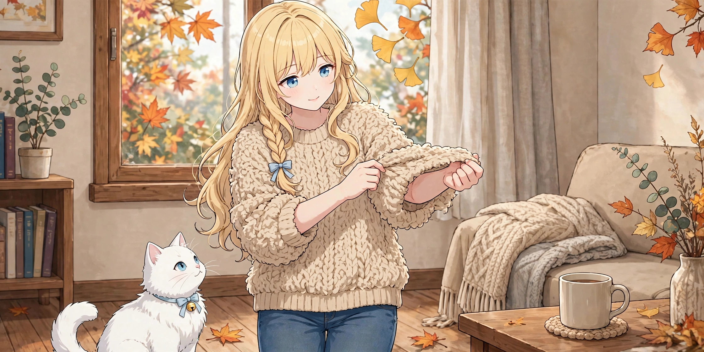

WOMEN — FASHION FEATURENo.8
秋冬ニット・カットソーの選び方（40代）
TEXT — 222工房（セラピスト／パーソナルトレーナー） GUIDE — セラフィナ＆ルミ

セラフィナ：先に結論です。ニットは「首まわりが開きすぎないこと」「体のラインを拾いすぎない厚み」「毛玉になりにくい素材」の3点で選ぶと失敗が減ります。この記事の商品は、この3点に合うものだけを先に並べます。
この記事の商品（先に比較）
| 商品 | 価格（税込） | お店 |
|---|---|---|
| ブラウス レディース 7分袖 ストレッチ 静電防止 | 4,900円 | TAKA-Q（m.f.editorial） |
| ヘンリーネックベーシックトップス レディース | 2,634円 | Doux Belle |
| ブラウス（ストライプ柄・七分袖） | 24,200円 | Leilian PLUS HOUSE |
| シャギーニットトップス レディース トップス | 3,242円 | Doux Belle |
| [antiqua] メロウデザイン カットソー | 2,990円 | antiqua |
| テクスチャーデザイン刺繍ブラウス レディース トップス | 4,491円 | Doux Belle |
| 袖レース七分袖チュニックブラウス | 3,520円 | COCOMOMO |
| フィールド柄フリルブラウス | 8,580円 | LAURA ASHLEY |
| Vネック七分袖ブラウス | 3,293円 | Doux Belle |
| ギンガムチェック七分袖シャツ | 2,294円 | Doux Belle |
| レース刺繍七分袖ブラウス | 2,524円 | Doux Belle |
目安1：首まわりは開きすぎない
大きく開いた首まわりは、寒さだけでなく姿勢の崩れも目立たせます。鎖骨が少し見える程度の開きが目安です。ヘンリーネックはボタンの開け方で調整できます。
目安2：厚みは中くらい
薄いニットは体のラインを拾い、厚すぎると着膨れします。ふんわりしたシャギー素材は、ラインを拾わずに暖かく見せられます。
目安3：毛玉になりにくい素材
ニットの清潔感は毛玉で決まります。洗濯表示で手入れのしやすさを確認し、毛玉取りを習慣にしてください。価格が高いものほど長く使える傾向はありますが、まずは手入れの続けやすさで選ぶのが現実的です。
あえて推さないもの
- ぴったりした薄手のリブニット（ラインを拾います）
- 首が大きく開いたデザイン（寒くて姿勢も崩れます）
- 洗えない高級素材だけに頼ること（手入れが続かないと清潔感が落ちます）
SHOPPING今回のアイテム
この記事の目安に合う商品
特徴：価格帯の違うものを並べました。日常使いは3,000円前後、長く使う1枚は素材で選んでください。
PR：この記事のテーマに合うニット・カットソー（PR）


![[antiqua] メロウデザイン カットソー](https://tshop.r10s.jp/stylife/cabinet/item/957/sr5957-01_1.jpg?fitin=600%3A720&composite-to=center%2Ccenter%7C600%3A720)


あわせて読みたい：トップス種類別ガイド／二の腕カバー トップスの選び方
NEXT — 次に読む脚の冷え対策｜あったかレギンスの選び方（40代）